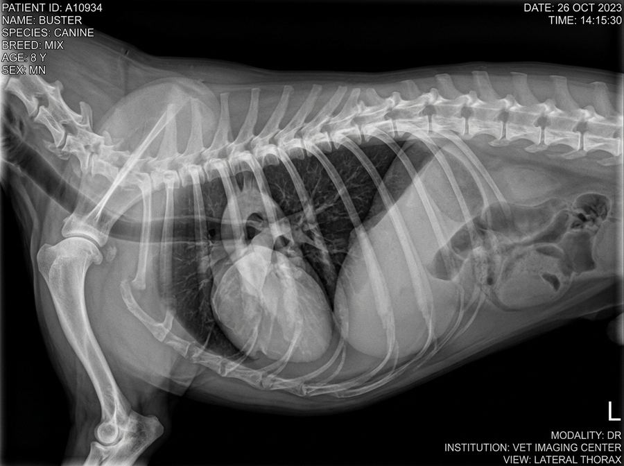

สถานีที่ 3 · ภาพทรวงอก
demo — จากเคสสอนอ่านภาพ
04:59

ROI 1: Cardiomegaly
VHS = 11.4v (Elevated)
PATIENT: BUSTER (CANINE, 8Y MN)
VIEW: LATERAL THORAX (DR)
W: 350 L: 40 (CHEST WINDOW)
100%
ดูภาพทรวงอกฉายด้านของ Buster อายุ 8 ปี — ข้อใดตรงกับความผิดปกติที่พบ?
ลองปุ่ม "วงจุดที่สนใจ" หรือ "วัด VHS" บนฟิล์มก่อนตอบ
VHS วัดได้ 11.4 กระดูกสันหลัง (ปกติ ≤ 10.5v) ร่วมกับ trachea ถูกยกขึ้น — สอดคล้องกับ cardiomegaly ลองกด "วัด VHS" บนฟิล์มดู